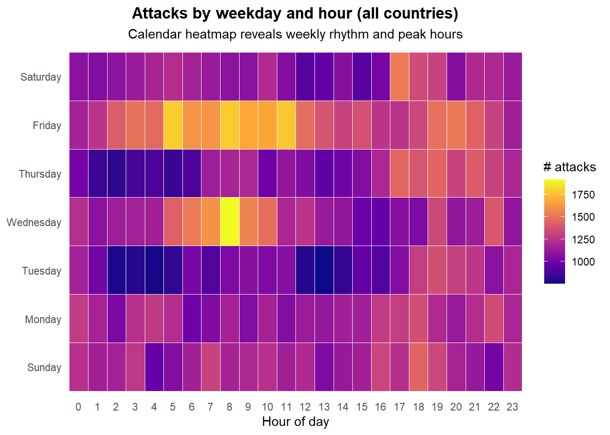
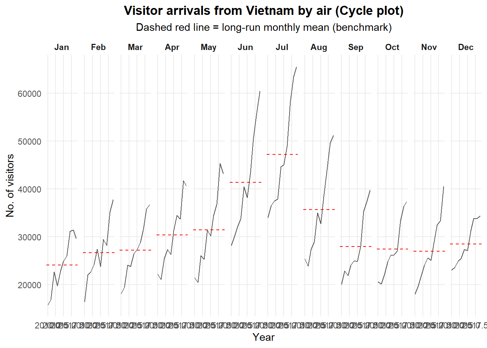
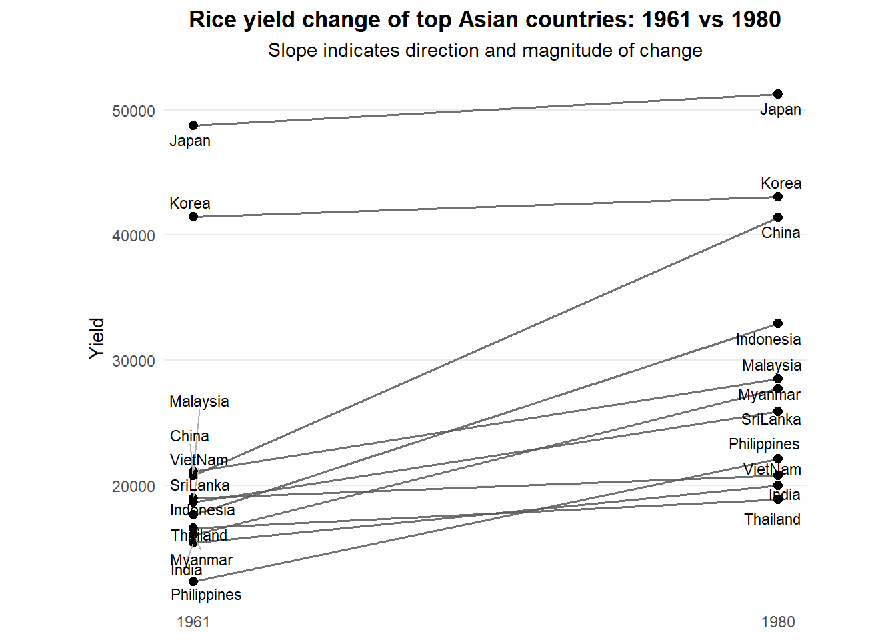

Code
pacman::p_load(
tidyverse, lubridate, readxl, knitr,
viridis, ggthemes, ggrepel
)This hands-on focuses on time-oriented visual analytics. I follow the teacher’s workflow but add short student-style notes (what I observed, what I think it implies), while keeping the page clean and Netlify-friendly.
We will build:
pacman::p_load(
tidyverse, lubridate, readxl, knitr,
viridis, ggthemes, ggrepel
)On Chinese systems, weekdays() can return weekday names in Chinese (e.g., 星期一).
That will not match English factor levels and can turn wkday into NA.
Sys.setlocale("LC_TIME", "English")[1] "English_United States.1252"If
"English"fails on your machine, try"C"or"en_US.UTF-8".
show_head <- function(df, n = 6, caption = NULL) {
knitr::kable(head(df, n), caption = caption)
}Dataset: eventlog.csv (stored at project root data/).
This qmd is in a subfolder, so I use ../data/... paths.
attacks_raw <- read_csv("../data/eventlog.csv", show_col_types = FALSE)
show_head(attacks_raw, caption = "Preview of eventlog.csv")| timestamp | source_country | tz |
|---|---|---|
| 2015-03-12 15:59:16 | CN | Asia/Shanghai |
| 2015-03-12 16:00:48 | FR | Europe/Paris |
| 2015-03-12 16:02:26 | CN | Asia/Shanghai |
| 2015-03-12 16:02:38 | US | America/Chicago |
| 2015-03-12 16:03:22 | CN | Asia/Shanghai |
| 2015-03-12 16:03:45 | CN | Asia/Shanghai |
In practice, the tz column may contain invalid or missing timezone strings.
lubridate::with_tz() requires a valid Olson/IANA timezone name, otherwise rendering fails.
Strategy: - force tz to character, - replace invalid / empty tz with "UTC", - parse timestamps as UTC first, then convert to local tz, - extract weekday and hour.
make_hr_wkday <- function(ts, tz) {
tz <- as.character(tz)[1]
tz <- dplyr::if_else(
is.na(tz) | tz == "" | !(tz %in% OlsonNames()),
"UTC",
tz
)
real_times <- with_tz(ymd_hms(ts, tz = "UTC"), tz = tz)
tibble(
wkday = weekdays(real_times),
hour = hour(real_times)
)
}
wkday_levels <- c("Sunday", "Monday", "Tuesday", "Wednesday",
"Thursday", "Friday", "Saturday")
attacks <- attacks_raw %>%
mutate(
tz = as.character(tz),
tz = dplyr::if_else(is.na(tz) | tz == "" | !(tz %in% OlsonNames()), "UTC", tz)
) %>%
group_by(tz) %>%
group_modify(~ bind_cols(.x, make_hr_wkday(.x$timestamp, unique(.x$tz)[1]))) %>%
ungroup() %>%
mutate(
wkday = factor(wkday, levels = wkday_levels),
hour = factor(hour, levels = 0:23)
)
show_head(attacks, caption = "Processed attacks table (preview)")| tz | timestamp | source_country | wkday | hour |
|---|---|---|---|---|
| Africa/Cairo | 2015-05-23 20:53:39 | BG | Saturday | 20 |
| Africa/Cairo | 2015-05-24 06:22:46 | TW | Sunday | 6 |
| Africa/Cairo | 2015-05-24 08:36:47 | TW | Sunday | 8 |
| Africa/Cairo | 2015-05-24 11:48:27 | CN | Sunday | 11 |
| Africa/Cairo | 2015-05-24 15:30:28 | US | Sunday | 15 |
| Africa/Cairo | 2015-05-25 11:25:33 | CA | Monday | 11 |
Observation: After setting LC_TIME to English, the weekday labels are in English and the ordering is consistent (Sun → Sat).
grouped_all <- attacks %>%
count(wkday, hour, name = "n") %>%
drop_na()ggplot(grouped_all, aes(x = hour, y = wkday, fill = n)) +
geom_tile(color = "white", linewidth = 0.15) +
scale_fill_viridis_c(option = "C", name = "# attacks") +
labs(
title = "Attacks by weekday and hour (all countries)",
subtitle = "Calendar heatmap reveals weekly rhythm and peak hours",
x = "Hour of day", y = NULL
) +
theme_minimal(base_family = "Helvetica") +
theme(
plot.title = element_text(hjust = 0.5, face = "bold"),
plot.subtitle = element_text(hjust = 0.5),
panel.grid = element_blank(),
legend.position = "right"
)
# grouped_all = count of attacks for each weekday-hour tile
# geom_tile + viridis palette are reliable and readable for heatmapsInsight: The heatmap makes “busy windows” obvious. Concentrated peaks can be consistent with automated behavior or coordinated timing.
Instead of printing a long table, I only display the top 10 summary rows.
attacks_by_country <- attacks %>%
count(source_country, name = "n") %>%
mutate(pct = n / sum(n)) %>%
arrange(desc(n))
knitr::kable(
head(attacks_by_country, 10) %>% mutate(pct = scales::percent(pct)),
caption = "Top source countries (Top 10)"
)| source_country | n | pct |
|---|---|---|
| CN | 85243 | 42.6217% |
| US | 48684 | 24.3421% |
| KR | 12648 | 6.3240% |
| NL | 8572 | 4.2860% |
| VN | 6340 | 3.1700% |
| TW | 3469 | 1.7345% |
| GB | 3266 | 1.6330% |
| FR | 3252 | 1.6260% |
| UA | 2219 | 1.1095% |
| DE | 2055 | 1.0275% |
top4 <- attacks_by_country %>% slice(1:4) %>% pull(source_country)
top4_attacks <- attacks %>%
filter(source_country %in% top4) %>%
count(source_country, wkday, hour, name = "n") %>%
mutate(source_country = factor(source_country, levels = top4)) %>%
drop_na()ggplot(top4_attacks, aes(x = hour, y = wkday, fill = n)) +
geom_tile(color = "white", linewidth = 0.15) +
scale_fill_viridis_c(option = "C", name = "# attacks") +
facet_wrap(~source_country, ncol = 2) +
labs(
title = "Attacks by weekday and hour (Top 4 source countries)",
subtitle = "Compare country-specific rhythms side-by-side",
x = "Hour of day", y = NULL
) +
theme_minimal(base_family = "Helvetica") +
theme(
plot.title = element_text(hjust = 0.5, face = "bold"),
plot.subtitle = element_text(hjust = 0.5),
panel.grid = element_blank(),
strip.text = element_text(face = "bold"),
legend.position = "right"
)
# facet_wrap compares patterns across the top 4 source countriesObservation: Some countries show sharper hourly peaks, while others have a flatter pattern.
Insight: Cross-country differences suggest different “attack styles” (scheduled bursts vs continuous scanning).
A cycle plot compares the same month across multiple years by faceting on month.
air <- read_excel("../data/arrivals_by_air.xlsx")
show_head(air, caption = "Preview of arrivals_by_air.xlsx")| Month-Year | Republic of South Africa | Canada | USA | Bangladesh | Brunei | China | Hong Kong SAR (China) | India | Indonesia | Japan | South Korea | Kuwait | Malaysia | Myanmar | Pakistan | Philippines | Saudi Arabia | Sri Lanka | Taiwan | Thailand | United Arab Emirates | Vietnam | Belgium & Luxembourg | CIS | Finland | France | Germany | Ireland | Italy | Netherlands | Spain | Switzerland | United Kingdom | Australia | New Zealand |
|---|---|---|---|---|---|---|---|---|---|---|---|---|---|---|---|---|---|---|---|---|---|---|---|---|---|---|---|---|---|---|---|---|---|---|---|
| 2000-01-01 | 3291 | 5545 | 25906 | 2883 | 3749 | 33895 | 13692 | 19235 | 65151 | 59288 | 21457 | 507 | 27472 | 1177 | 2150 | 8404 | 1312 | 3922 | 15766 | 12048 | 1318 | 1527 | 1434 | 2703 | 1634 | 4752 | 12739 | 1292 | 3544 | 4962 | 925 | 3731 | 28986 | 34616 | 5034 |
| 2000-02-01 | 2357 | 6120 | 28262 | 2469 | 3236 | 34344 | 19870 | 18975 | 37105 | 58188 | 19634 | 199 | 29084 | 1161 | 2496 | 9128 | 623 | 3988 | 24861 | 12745 | 899 | 2269 | 1596 | 1182 | 1297 | 6391 | 13093 | 1200 | 2897 | 5054 | 747 | 3980 | 35148 | 26030 | 3938 |
| 2000-03-01 | 4036 | 6255 | 30439 | 2904 | 3342 | 27053 | 17086 | 21049 | 44205 | 74426 | 20719 | 386 | 30504 | 1355 | 2429 | 11691 | 1578 | 4259 | 18767 | 16971 | 1474 | 2034 | 1548 | 1088 | 1220 | 5528 | 13645 | 1368 | 2717 | 4950 | 935 | 3576 | 36117 | 31119 | 4668 |
| 2000-04-01 | 4241 | 4521 | 25378 | 2843 | 5117 | 30464 | 22346 | 26160 | 45480 | 49985 | 17489 | 221 | 34478 | 1593 | 2711 | 14141 | 705 | 6579 | 22735 | 20397 | 1284 | 2420 | 1592 | 1012 | 1208 | 5544 | 13366 | 1345 | 2512 | 4149 | 941 | 3850 | 33792 | 34824 | 6890 |
| 2000-05-01 | 2841 | 3914 | 26163 | 2793 | 4152 | 30775 | 16357 | 35869 | 38350 | 48937 | 19398 | 164 | 34795 | 1397 | 2594 | 13305 | 679 | 4625 | 18399 | 15769 | 1042 | 1833 | 1167 | 660 | 743 | 4225 | 10878 | 1067 | 2205 | 3643 | 764 | 3025 | 23377 | 33139 | 7006 |
| 2000-06-01 | 2776 | 3487 | 28179 | 3146 | 5018 | 26720 | 18133 | 31314 | 47982 | 53798 | 17522 | 440 | 34660 | 1715 | 2924 | 10555 | 2749 | 4740 | 21042 | 17217 | 1545 | 2480 | 1170 | 712 | 982 | 4047 | 9054 | 1363 | 2196 | 3544 | 855 | 2580 | 21769 | 35731 | 7634 |
air2 <- air %>%
rename(`Month-Year` = 1) %>%
mutate(
`Month-Year` = as.Date(`Month-Year`),
month = factor(month(`Month-Year`), levels = 1:12, labels = month.abb),
year = year(`Month-Year`)
)vietnam <- air2 %>%
select(Vietnam, month, year) %>%
filter(year >= 2010)
hline_data <- vietnam %>%
group_by(month) %>%
summarise(avgvalue = mean(Vietnam, na.rm = TRUE), .groups = "drop")ggplot(vietnam, aes(x = year, y = Vietnam, group = month)) +
geom_line(color = "gray35", linewidth = 0.45) +
geom_hline(data = hline_data, aes(yintercept = avgvalue),
linetype = "dashed", linewidth = 0.5, color = "red") +
facet_grid(~month) +
labs(
title = "Visitor arrivals from Vietnam by air (Cycle plot)",
subtitle = "Dashed red line = long-run monthly mean (benchmark)",
x = "Year", y = "No. of visitors"
) +
theme_minimal(base_family = "Helvetica") +
theme(
plot.title = element_text(hjust = 0.5, face = "bold"),
plot.subtitle = element_text(hjust = 0.5),
panel.grid.minor = element_blank(),
strip.text = element_text(face = "bold")
)
# facet by month to compare within-month patterns across years
# dashed red line gives a stable monthly baselineObservation: Some months systematically sit above the baseline, indicating persistent seasonal peaks.
Insight: Cycle plot is good for detecting seasonality, but if we want to highlight shocks, a line chart with annotated events may be clearer.
The slopegraph compares rice yields at two time points for top Asian countries.
To avoid overlapping labels, I use ggrepel and keep the plot uncluttered.
rice <- read_csv("../data/rice.csv", show_col_types = FALSE)
show_head(rice, caption = "Preview of rice.csv")| Country | Year | Yield | Production |
|---|---|---|---|
| China | 1961 | 20787 | 56217601 |
| China | 1962 | 23700 | 65675288 |
| China | 1963 | 26833 | 76439280 |
| China | 1964 | 28289 | 85853780 |
| China | 1965 | 29667 | 90705630 |
| China | 1966 | 31445 | 98403990 |
rice2 <- rice %>%
filter(Year %in% c(1961, 1980)) %>%
mutate(Year = factor(Year, levels = c(1961, 1980)))
top_countries <- rice2 %>%
group_by(Country) %>%
summarise(avg_yield = mean(Yield, na.rm = TRUE), .groups = "drop") %>%
arrange(desc(avg_yield)) %>%
slice(1:12) %>%
pull(Country)
rice_wide <- rice2 %>%
filter(Country %in% top_countries) %>%
select(Country, Year, Yield) %>%
pivot_wider(names_from = Year, values_from = Yield) %>%
drop_na() %>%
mutate(Country = fct_reorder(Country, `1980`))p_slope <- ggplot(rice_wide) +
geom_segment(aes(x = 1, xend = 2, y = `1961`, yend = `1980`),
linewidth = 0.7, alpha = 0.85, color = "gray35") +
geom_point(aes(x = 1, y = `1961`), size = 2.2) +
geom_point(aes(x = 2, y = `1980`), size = 2.2) +
ggrepel::geom_text_repel(
aes(x = 1, y = `1961`, label = Country),
direction = "y", hjust = 1.1, size = 3,
segment.color = "gray70", max.overlaps = Inf
) +
ggrepel::geom_text_repel(
aes(x = 2, y = `1980`, label = Country),
direction = "y", hjust = -0.1, size = 3,
segment.color = "gray70", max.overlaps = Inf
) +
scale_x_continuous(breaks = c(1, 2), labels = c("1961", "1980")) +
labs(
title = "Rice yield change of top Asian countries: 1961 vs 1980",
subtitle = "Slope indicates direction and magnitude of change",
x = NULL, y = "Yield"
) +
theme_minimal(base_family = "Helvetica") +
theme(
plot.title = element_text(hjust = 0.5, face = "bold"),
plot.subtitle = element_text(hjust = 0.5),
panel.grid.major.x = element_blank(),
panel.grid.minor = element_blank()
) +
coord_cartesian(clip = "off") +
theme(plot.margin = margin(5.5, 50, 5.5, 50))
p_slope
# ggrepel prevents label overlap without relying on fragile slopegraph packagesObservation: Countries with steeper upward slopes improved yield substantially from 1961 to 1980.
Insight: This two-point comparison is easy to read, but it hides intermediate-year volatility. A small-multiples time series would complement it well.
LC_TIME) is critical on non-English systems; otherwise weekday factors may become NA.with_tz() to prevent rendering failures.